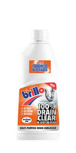

Trade Mark Journal No.2025/024 13 June 2025
UK00004209664 27 May 2025 (1,3,5)

The mark in use is/will be in the colour(s) Black, White, Grey, Silver and Pantone: 6021C (Orange), 032C (Red), 072C (Blue).
International priority date claimed: 14 May 2025
(Ireland)
(2025/00996)
- Class 1
- Chemical products for use in industry and science; chemical products for use in the manufacture of cleaning or polishing preparations; cleaning preparations, detergents and degreasing preparations; all for use in industrial and manufacturing processes; artificial and synthetic resins; solvents and chemical agents; all included in Class 1.
- Class 3
- Polishing preparations, common soap, detergents, starch, blue and other preparations for laundry purposes, polishing soap; soaps; cleaning, scouring and polishing powders, liquids and pastes; polishing substances; abrasives; washing substances, bleaching substances for laundry use; preparations for removing foreign matter from metal and other substances; waxes and preparations in the nature of waxes; polishes; solvents for cleaning or stripping purposes; degreasing preparations and substances, polish, lacquer and varnish removing preparations; shampoos; non-medicated toilet preparations; preparations in the form of creams and of preservatives, all for furniture and or leather; shoe cleaning and shoe polishing preparations; abrasive cloths; preparations for window and glass cleaning; dentifrices; all included in Class 3; oven cleaning preparations; oven cleaners; barbecue cleaning preparations; cleaning preparations for ovens and barbecues; general purpose household cleaning preparations; hard surface cleaning preparations; preparations for cleaning household appliances; disposable cleaning cloths pre-moistened with cleaning solution for cleaning hard surfaces; dish washing detergents; bleaching preparations; toilet cleaning preparations; toilet bowl cleaners; cleaning, polishing, scouring or abrasive preparations; drain and sink cleaning preparations; detergents; all-purpose cleaners; limescale removers, rust removers, stain removers, grease removers; decalcifying and descaling preparations for household use; cleaning preparations which prevent the build-up of stains and limescale.
- Class 5
- Chemical preparations included in Class 5 for use in hygiene; disinfectants (other than for laying and absorbing dust), chemical preparations for sanitary purposes; Germicidal and disinfectant preparations; disinfectant solutions for use in wiping surfaces; disinfectants for household use or for hygiene purposes; disinfecting agents and preparations having disinfecting properties; anti-bacterial preparations; air freshening or air purifying preparations or substances; fungicides; preparations or substances having air freshening, air purifying or fungicidal properties.
Boyne Valley Unlimited Company
Representative: Dolleymores